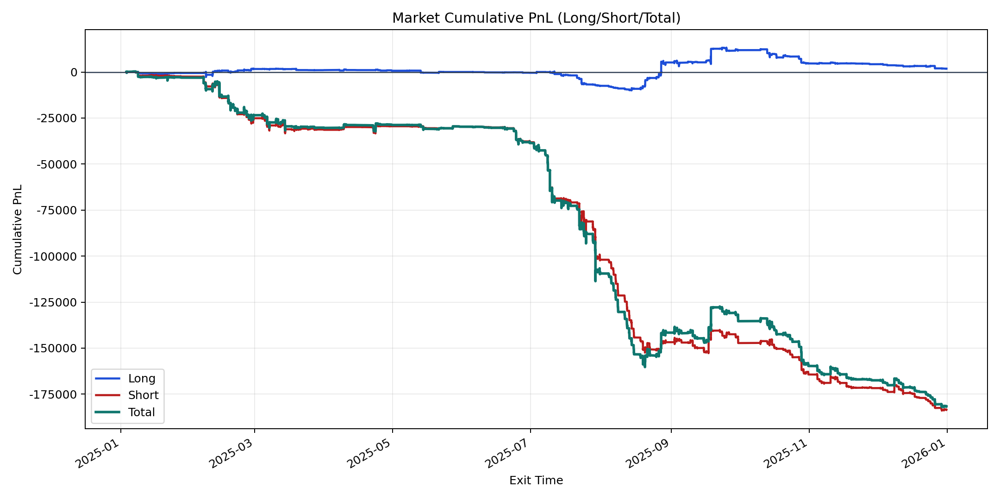
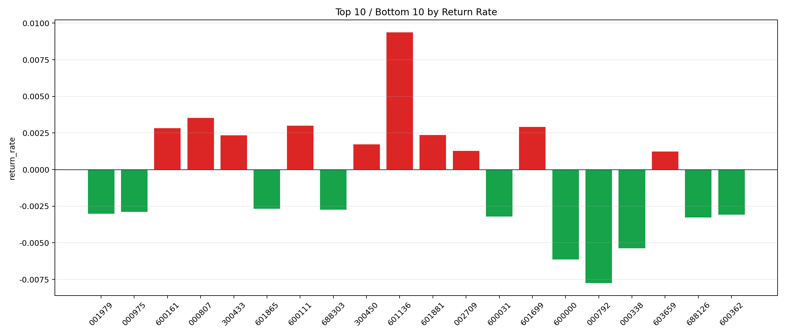

| repo_root | /home/haoranyou/data/output/alpha0.4_1w_5s_3ticks_index_filter/index_weights_300 |
|---|---|
| period_months | 12 |
| period_label | 2025-01-03_to_2025-12-31 |
| start_time | 2025-01-03 09:53:37 |
| end_time | 2025-12-31 14:45:04 |
| n_trades | 30190 |
| n_symbols | 99 |
| total_pnl | -181717.57114999992 |
| long_total_pnl | 1826.7053500000197 |
| short_total_pnl | -183544.27649999995 |
| total_entry_notional | 279667436.0 |
| long_entry_notional | 49134425.0 |
| short_entry_notional | 230533011.0 |
| total_return_rate | -0.0006497630676958754 |
| long_return_rate | 3.717770890775703e-05 |
| short_return_rate | -0.0007961735098319605 |
| top_symbols_by_return | ["601136", "000807", "600111", "601699", "600161", "601881", "300433", "300450", "002709", "603659"] |
| bottom_symbols_by_return | ["000792", "600000", "000338", "688126", "600031", "600362", "001979", "000975", "688303", "601865"] |

